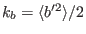

Next: The dynamic q2l-equation Up: The turbulence model Previous: The dynamic q2/2-equation Contents
INTERFACE:
subroutine kbeq(nlev,dt,u_taus,u_taub,z0s,z0b,h,NN,SS)DESCRIPTION:
The transport equation for (half the) buoyancy variance, , follows from the equation for the buoyancy fluctations (see Sander (1998)). In the case of a Boussinesq-fluid, this equation can be written as
The production of buoyancy variance by the vertical density gradient is
The rate of molecular destruction,
 , can be computed
from either a transport equation or a algebraic expression, section 4.7.10.
, can be computed
from either a transport equation or a algebraic expression, section 4.7.10.
USES:
use turbulence, only: Pb,epsb,nuh use turbulence, only: kb,kb_min use turbulence, only: k_ubc, k_lbc, ubc_type, lbc_type use util, only: Dirichlet,Neumann IMPLICIT NONEINPUT PARAMETERS:
number of vertical layers integer, intent(in) :: nlev time step (s) REALTYPE, intent(in) :: dt surface and bottom friction velocity (m/s) REALTYPE, intent(in) :: u_taus,u_taub surface and bottom roughness length (m) REALTYPE, intent(in) :: z0s,z0b layer thickness (m) REALTYPE, intent(in) :: h(0:nlev) square of shear and buoyancy frequency (1/s^2) REALTYPE, intent(in) :: NN(0:nlev),SS(0:nlev)REVISION HISTORY:
Original author(s): Lars Umlauf